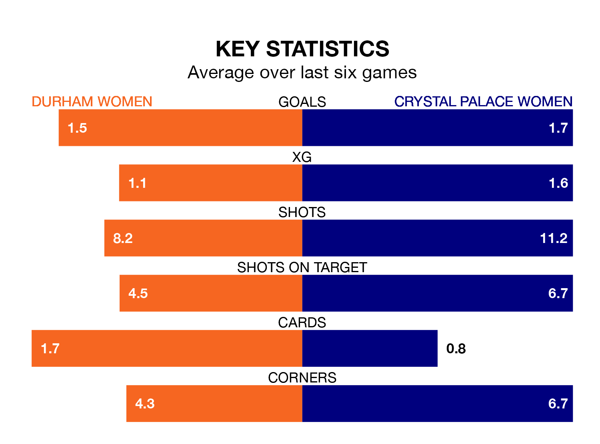

Relegation candidates Durham Women face a challenge against high-flying Crystal Palace Women at Maiden Castle Sports Park on Sunday.
Durham Women are ninth in the FA Women's Championship table, and have picked up five wins and five draws in their 19 games to date.
Crystal Palace, meanwhile, are second in the standings with 36 points, having won 11 and drawn three of their first 18 matches, and are one point behind table-toppers Sunderland Women.
With 47 goals in 18 games so far this season, Crystal Palace are the league's highest scorers with 2.6 goals per game. And they are conceding fewer than average, letting in 19 goals at a rate of 1.1 per game.
Durham, meanwhile, are below average scorers, with 1.2 goals per game, compared to a league average of 1.4. They have conceded 2.0 goals per game.
In Elise Hughes, the away side have the league's most on-form striker so far this season. She has notched 14 goals in 18 appearances.
Her goal rate of one every 116 minutes is much quicker than that of Amy Andrews, the hosts' top scorer with a goal every 241 minutes, and a total of five goals in 19 games.
Durham are in terrible form in the FA Women's Championship, with no wins and two draws from their last six games.
With four wins and two losses over that period, Crystal Palace's form is much better – they have taken 12 points from 18, compared to Durham's two.
In the last 10 years, Durham and Crystal Palace have played each other on 12 occasions. Durham won seven of them and Crystal Palace five.
On average, Durham scored 1.7 goals and Crystal Palace 1.6 in those matches.
Their last meeting was on September 10, when Crystal Palace won 9-1 at home.
Durham's last match was on Sunday, a 5-3 loss against Sunderland Women, with Mollie Lambert (two) and Beth Hepple getting the goals for Durham.
Crystal Palace beat Watford Women 3-0 last time out, also on Sunday, with Annabel Blanchard, Molly Sharpe and Ria Percival on the scoresheet.
Updated: 12:16 (UTC), 25/03/24